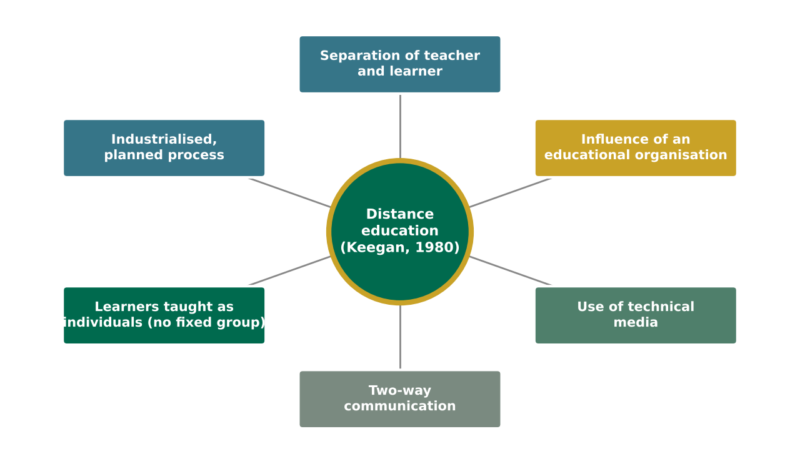
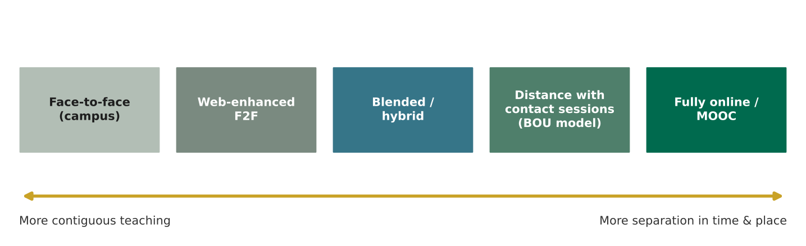
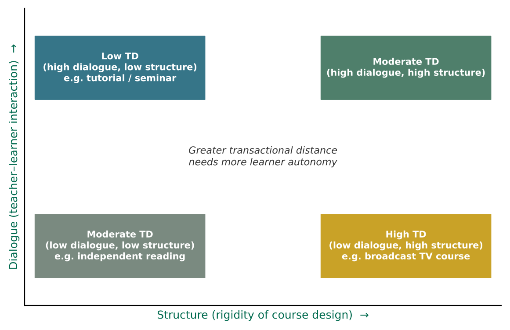
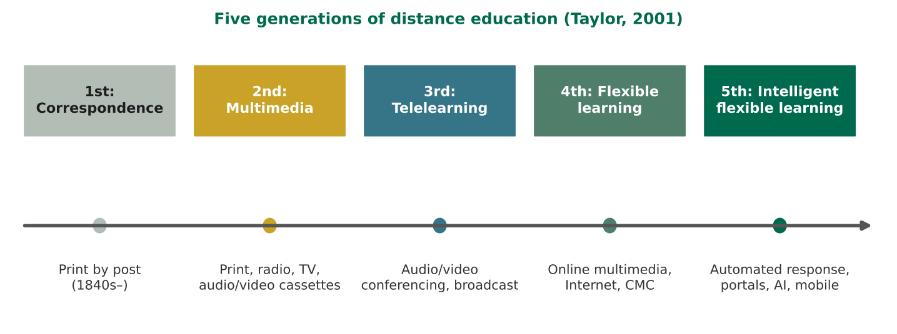
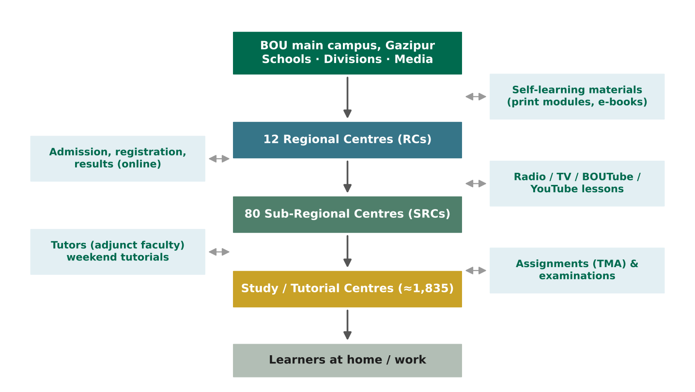
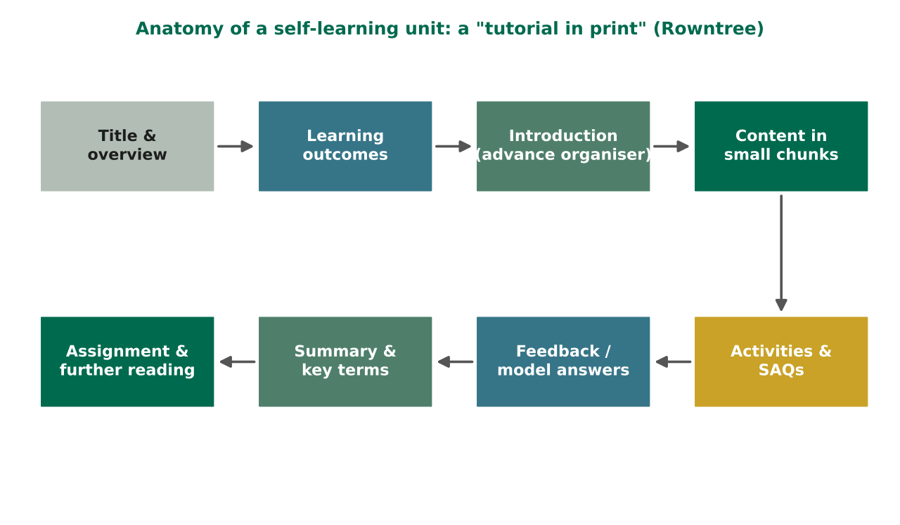
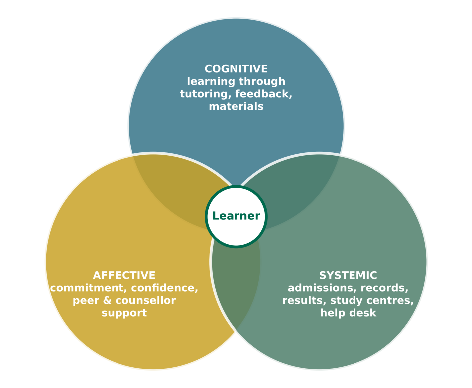
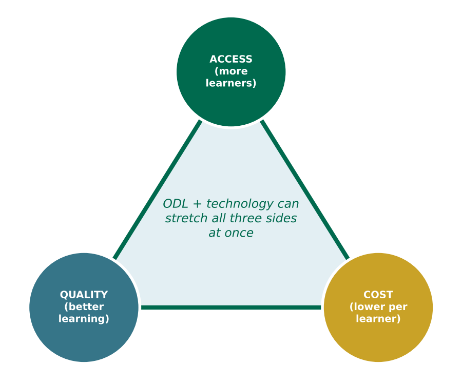

ODL Open and Distance Learning
Concepts, theories, history, self-learning materials, media, learner support, assessment, quality, management and the future of ODL, with Bangladesh Open University as the case throughout
Contents
- Unit 1: Concept and Foundations of Open and Distance Learning
- Unit 2: Theories of Distance Education
- Unit 3: Historical Development of ODL: Global and Bangladesh
- Unit 4: Bangladesh Open University: Structure, Programmes and Delivery System
- Unit 5: Instructional Design and Self-Learning Materials (SLM)
- Unit 6: Media and Technology in ODL
- Unit 7: Learner Support, Assessment and Quality Assurance
- Unit 8: Management, Economics, Policy and Future of ODL
- Exam Preparation Bank
- References
About this course
Open and distance learning (ODL) is the fastest-growing way of widening access to education worldwide. In Bangladesh, Bangladesh Open University (BOU), established by the BOU Act 1992, is the country's only public university that teaches entirely through the distance mode, serving learners from SSC to Ph.D. This course explains what ODL is and how it differs from conventional education; the theories that explain teaching and learning at a distance; the history of ODL worldwide and in Bangladesh; how self-learning materials are designed; how media and technology are selected; how learners are supported, assessed and retained; how quality is assured and costs managed; and where ODL is going in the age of online, blended and AI-supported learning.
Course objectives
Define open learning, distance education and ODL, and explain their features, philosophy, strengths and limitations.
Explain the major theories of distance education (Wedemeyer, Peters, Holmberg, Moore, Keegan, Garrison/Anderson).
Trace the development of ODL globally and in Bangladesh, and describe BOU's structure, programmes and delivery system.
Design self-learning materials and select media appropriate to ODL learners.
Plan learner support, assessment, quality assurance and management systems for an ODL institution.
Evaluate current issues: OER, MOOCs, blended learning, emergency remote teaching, micro-credentials and AI.
BOU does not publish a separate ODL course syllabus online. These notes therefore follow the content of ODL courses taught in open universities of the region and BOU's own ODL system, in eight units in a logical teaching order.
Read the narrative first, then the Key point boxes, then test yourself with the Exam focus questions.
Golden boxes = must-remember ideas. Teal boxes = definitions. Green boxes = Bangladesh context. Grey boxes = facts and figures to verify on the latest official source (bou.ac.bd, UGC, BANBEIS).
The final chapter is a question bank (40 MCQs with answers, 20 short and 12 broad questions) in the style of university examinations, followed by references in APA 7th style.
Unit 1: Concept and Foundations of Open and Distance Learning
1.1 Meaning of distance education
Distance education (DE) is any planned educational process in which the teacher and the learner are separated in space and often in time for most of the learning, and the gap is bridged by learning materials, media and two-way communication organised by an educational institution. The learner studies mainly at home or at work, at their own pace, with occasional contact with tutors.
Distance education (Keegan, 1996): Education characterised by the quasi-permanent separation of teacher and learner throughout the length of the learning process; the influence of an educational organisation in planning and preparing learning materials and providing student support; the use of technical media to unite teacher and learner and carry content; the provision of two-way communication; and the quasi-permanent absence of the learning group, so that people are taught as individuals rather than in groups, with the possibility of occasional meetings.
Distance education (Moore & Kearsley, 2012): Teaching and planned learning in which teaching normally occurs in a different place from learning, requiring communication through technologies as well as special institutional organisation.
Distance education (Holmberg, 1977): The various forms of study at all levels which are not under the continuous, immediate supervision of tutors present with their students in lecture rooms or on the same premises, but which, nevertheless, benefit from the planning, guidance and teaching of a tutorial organisation.

Figure 1. Keegan's defining elements of distance education (Keegan, 1980; 1996)
1.2 Meaning of open learning
Open learning is a philosophy, not a delivery method. It aims to remove barriers to learning: entry qualifications, age, place, time, pace, cost and fixed curricula. A system is more or less open according to how many choices it gives the learner (Rumble, 1989; Lewis & Spencer, 1986). Openness can apply to who may enter, what is learned, where, when, how and at what pace learning occurs, and how and when it is assessed.
Open learning (Lewis & Spencer, 1986): A term used to describe courses flexibly designed to meet individual requirements. It is often applied to provision which tries to remove barriers that prevent attendance at more traditional courses, but it also suggests a learner-centred philosophy.
Open and distance learning (UNESCO, 2002): Approaches to learning that focus on freeing learners from the constraints of time and place while offering flexible learning opportunities to individuals and groups of learners.
Distance describes the mode (separation of teacher and learner); open describes the philosophy (removal of barriers). A course can be distance but not open (strict entry requirements, fixed timetable) or open but not distance (an open-entry evening class). ODL combines the two and is the term used by UNESCO, COL and BOU.
1.3 Related terms
| Term | Meaning |
|---|---|
| Correspondence education | Earliest form of DE: printed lessons sent and returned by post. |
| Home study / independent study | Learner studies alone with prepared materials (Wedemeyer's term in the USA). |
| External studies | Off-campus degrees of a conventional university (e.g. University of London External, 1858). |
| Flexible learning | Choice in time, place, pace, content and assessment; may be on or off campus. |
| E-learning / online learning | Learning delivered through digital networks; a subset of DE when fully online. |
| Blended / hybrid learning | Planned mix of face-to-face and online learning (Garrison & Kanuka, 2004). |
| Mobile learning (m-learning) | Learning through mobile phones and tablets, anywhere and anytime. |
| Emergency remote teaching (ERT) | Temporary shift of face-to-face teaching to remote mode in a crisis (Hodges et al., 2020); not designed ODL. |
| Virtual university | Institution delivering programmes wholly through the Internet. |

Figure 2. The continuum from contiguous (face-to-face) teaching to fully distance learning
1.4 Characteristics of ODL
Separation of teacher and learner in space and/or time.
Institutional planning: courses designed by a course team, not by an individual teacher in a classroom.
Mediated teaching through print, audio, video, broadcast, Internet and mobile.
Two-way communication via tutorials, assignments with feedback, phone, e-mail, LMS forums.
Self-learning materials that teach on their own ("teacher in print").
Learner autonomy: the learner manages time, pace and place.
Industrialised production: division of labour, mass production of materials, economies of scale (Peters).
Learner support through regional and study centres, tutors and counsellors.
Open admission and flexible duration (e.g. BOU B.Ed: 1 year, up to 5 years to complete).
Large scale: mega-universities with over 100,000 learners (Daniel, 1996).
1.5 Philosophy and principles of ODL
ODL rests on the ideas of education as a human right (UDHR Art. 26), lifelong learning (Faure, 1972; Delors, 1996), equity and social justice (reaching those excluded by geography, poverty, gender, disability or work), learner-centredness and adult learning (Knowles's andragogy: self-concept, experience, readiness, problem-centred orientation, internal motivation). Its guiding principles include openness, flexibility, learner autonomy, interaction, quality equal to conventional education, and cost-effectiveness.
1.6 Need and importance of ODL
Access and equity: reaches rural people, women, working adults, people with disabilities, prisoners and the poor.
Lifelong and continuing education: in-service upgrading without leaving the job (e.g. teachers' B.Ed through BOU).
Massification of higher education where campus capacity is limited.
Second chance: SSC/HSC for dropouts and over-age learners.
Cost-effectiveness: lower cost per learner at scale.
Human resource development and national development goals (SDG 4: inclusive, equitable quality education and lifelong learning).
Resilience: continuity of learning in disasters and pandemics.
1.7 Advantages and limitations
| Advantages | Limitations |
|---|---|
| Learn while earning; no need to leave job or family | Isolation and lack of peer interaction |
| Flexible time, place and pace | Requires high self-discipline and motivation; higher dropout |
| Wide access at low cost per learner | High fixed (start-up) cost of materials and systems |
| Standardised, high-quality materials by expert teams | Materials can become outdated; rigid to revise |
| Uses multiple media | Digital divide: electricity, devices, data cost |
| Develops learner autonomy and self-directed learning | Practical and laboratory skills are hard to teach |
| Serves disadvantaged and remote groups | Social perception of lower status ("parity of esteem" problem) |
1.8 Distance education vs conventional education
| Basis | Conventional (face-to-face) | ODL |
|---|---|---|
| Teacher–learner | Contiguous, same place and time | Separated; mediated |
| Teaching agent | Individual teacher | Institution, course team, materials |
| Pace | Fixed by timetable | Learner-controlled within limits |
| Admission | Restrictive (age, marks, seats) | Open or relaxed |
| Learners | Mostly young, full-time | Mostly adults, part-time, working |
| Media | Speech, chalkboard, textbooks | Print SLM, broadcast, online, mobile |
| Communication | Immediate, synchronous | Delayed (asynchronous) and some synchronous |
| Cost structure | Variable cost high | High fixed cost, low marginal cost |
| Mode of production | Craft-like | Industrial (Peters) |
1.9 Types of ODL institutions
Single-mode: teach only at a distance (e.g. BOU, UK Open University, IGNOU, AIOU).
Dual-mode: conventional universities that also offer distance programmes (e.g. University of Delhi School of Open Learning; in Bangladesh, some private universities' online/blended programmes where permitted).
Mixed-mode / multi-mode: on-campus students may take distance courses and vice versa.
Consortium: several institutions share courses and materials (e.g. SAARC Consortium on ODL; Commonwealth Executive MBA/MPA delivered with COL support).
Likely questions: "Define distance education. Distinguish it from open learning." "Discuss Keegan's elements of distance education." "Compare ODL with conventional education." "Why is ODL important for a developing country like Bangladesh?"
Unit 2: Theories of Distance Education
Keegan (1996) grouped the theories of distance education into three families: theories of independence and autonomy (Wedemeyer, Moore), theory of industrialisation (Peters) and theories of interaction and communication (Holmberg, Bååth, Daniel & Marquis). Later, online learning added community and connectivist theories (Garrison et al., Anderson, Siemens).
2.1 Wedemeyer: independent study
Charles A. Wedemeyer (University of Wisconsin), the father of American independent study, argued in Learning at the Back Door (1981) that education should be available to anyone, anywhere, at any time. His system emphasised learner independence: learners should be able to start at any time, pace themselves, choose goals and use many media. He proposed the separation of teaching and learning, the teacher–learner–communication–content system, and led the AIM (Articulated Instructional Media) Project (1964–68), which inspired the UK Open University.
2.2 Moore: theory of transactional distance
Michael G. Moore (1973, 1993) argued that distance is pedagogical, not geographical. Transactional distance (TD) is the psychological and communication space between teacher and learner that can create misunderstanding. It depends on three variables:
Dialogue: purposeful, constructive two-way interaction between teacher and learner.
Structure: rigidity or flexibility of objectives, content, methods and evaluation; how far the course can respond to individual needs.
Learner autonomy: the extent to which the learner, not the teacher, determines goals, methods and evaluation.
More structure and less dialogue = greater transactional distance; greater TD demands greater learner autonomy. A broadcast TV lecture has high structure and no dialogue (high TD); a live tutorial has high dialogue (low TD).

Figure 3. Moore's theory of transactional distance: dialogue, structure and resulting distance
Moore's three types of interaction (1989): learner–content, learner–instructor and learner–learner. Hillman, Willis and Gunawardena (1994) added learner–interface interaction (using the technology itself).
2.3 Peters: theory of industrialisation
Otto Peters (1967/1973, FernUniversität Hagen, Germany) described distance education as the most industrialised form of education. Like factory production, it uses rationalisation, division of labour (authors, editors, designers, media producers, tutors), mechanisation, assembly-line methods, mass production, standardisation, planning, centralisation and economies of scale. Peters later (2001) discussed the move to "post-industrial" digital learning environments. Criticism: it can treat learners as products, reduce teacher autonomy and lead to impersonal learning.
2.4 Holmberg: guided didactic conversation
Börje Holmberg (Sweden, Germany) proposed that distance teaching should be a guided didactic conversation: materials and tutor comments should be written in a friendly, personal, conversational style ("you", "we"), with easy language, explicit advice, invitations to exchange views and emotional involvement. He held that feelings of personal relation between teaching and learning parties promote study pleasure and motivation, which improve learning (Holmberg, 1983; 2005). His later term was teaching–learning conversation.
2.5 Keegan: reintegration of the teaching act
Desmond Keegan argued that in distance education the teaching acts are separated from the learning acts, so the institution must artificially reintegrate them: at the course-development stage through well-designed materials, and during delivery through two-way communication and student support. If reintegration fails, learning is weak and dropout high.
2.6 Other theories
| Theorist | Theory / idea | Core message |
|---|---|---|
| Bååth (1979) | Two-way communication | Assignments and tutor feedback are the core of teaching in DE. |
| Daniel & Marquis (1979) | Independence vs interaction | Balancing independent study (cheap) and interaction (costly) is the key design decision. |
| Sewart (1978) | Continuity of concern | Students need continuing human support; materials alone cannot teach. |
| Garrison (1985); Garrison & Shale | Generations & control | Control = independence + power + support; technology shapes generations of DE. |
| Garrison, Anderson & Archer (2000) | Community of Inquiry (CoI) | Deep online learning needs cognitive, social and teaching presence. |
| Anderson (2003) | Interaction equivalency theorem | Deep learning occurs if one of the three interactions (S–T, S–S, S–C) is high; the others can be reduced. |
| Siemens (2005); Downes | Connectivism | Learning is building and navigating networks of people and information; basis of cMOOCs. |
| Saba & Shearer (1994) | Systems dynamics | Tested Moore's theory: dialogue and structure vary dynamically over time. |

Figure 4. Generations of distance education: each new technology adds rather than replaces earlier media
Nipper (1989) described three generations: correspondence, multimedia, and computer-mediated communication. Taylor (2001) extended this to five (Figure 4). Anderson & Dron (2011) described three generations of pedagogy: cognitive-behaviourist, social-constructivist and connectivist.
Likely questions: "Explain Moore's theory of transactional distance with examples." "Discuss Peters's industrialisation theory and its relevance to BOU." "What is guided didactic conversation? How should SLM be written in this light?" "Explain the Community of Inquiry framework."
Unit 3: Historical Development of ODL: Global and Bangladesh
3.1 Global milestones
| Year | Milestone |
|---|---|
| 1728 | Caleb Phillips advertises shorthand lessons by mail in the Boston Gazette (often cited as the earliest example). |
| 1840 | Isaac Pitman teaches shorthand by post in England (penny post), the first systematic correspondence course. |
| 1856 | Charles Toussaint and Gustav Langenscheidt teach languages by correspondence in Berlin. |
| 1858 | University of London External System: degrees by examination for students anywhere. |
| 1873 | Anna Eliot Ticknor's Society to Encourage Studies at Home (USA), mainly for women. |
| 1892 | University of Chicago (William Rainey Harper) correspondence department; University of Wisconsin extension. |
| 1938 | International Council for Correspondence Education founded (now ICDE, Oslo). |
| 1946 | University of South Africa (UNISA) becomes a distance-teaching university. |
| 1960s | Wedemeyer's AIM project; radio and TV education spread. |
| 1969 | UK Open University receives Royal Charter; first students 1971. Model for the world's open universities. |
| 1972–74 | Korea National Open University (1972); Spain's UNED (1972); Allama Iqbal Open University, Pakistan (1974); FernUniversität, Germany (1974). |
| 1978 | Sukhothai Thammathirat Open University (STOU), Thailand. |
| 1984–85 | Universitas Terbuka, Indonesia (1984); IGNOU, India (1985). |
| 1987 | Commonwealth of Learning (COL) established; Asian Association of Open Universities (AAOU) founded. |
| 1992 | Bangladesh Open University established. |
| 1990s–2000s | Internet and online learning; virtual universities; UNESCO coins OER (2002). |
| 2008 | First MOOC (Siemens & Downes, "Connectivism and Connective Knowledge", CCK08). |
| 2012 | "Year of the MOOC": Coursera, edX, Udacity; UNESCO Paris OER Declaration. |
| 2019 | UNESCO Recommendation on OER. |
| 2020–21 | COVID-19: emergency remote teaching worldwide; ODL institutions lead recovery. |
| 2023–26 | Generative AI enters teaching, tutoring and assessment; micro-credentials expand. |
Mega-universities: Daniel (1996) defined them as distance-teaching universities with over 100,000 students in degree programmes. Examples: IGNOU, AIOU, Anadolu University (Turkey), Universitas Terbuka, UNISA, KNOU, STOU and BOU.
3.2 International ODL organisations
| Organisation | Role |
|---|---|
| ICDE (1938, Oslo) | Global membership body for open, flexible and distance education; UNESCO partner. |
| COL (1987, Burnaby, Canada) | Intergovernmental Commonwealth body promoting ODL; supports BOU (e.g. CEMBA/CEMPA, training). |
| CEMCA (1994, New Delhi) | COL's Commonwealth Educational Media Centre for Asia; SLM and media training. |
| AAOU (1987) | Asian Association of Open Universities; BOU is a member. |
| SACODiL | SAARC Consortium on Open and Distance Learning: cooperation among South Asian ODL institutions. |
| EADTU, ICDE, UNESCO IITE/UIL | European network; UNESCO institutes for ICT in education and lifelong learning. |
3.3 Development of distance education in Bangladesh
| Year | Development |
|---|---|
| 1956–62 | Early radio education programmes; Audio-Visual Education Centre (AVEC) set up in 1962. |
| 1978 | School Broadcasting Programme (SBP) launched to support classroom teaching by radio. |
| 1983 | AVEC and SBP merged into the National Institute of Educational Media and Technology (NIEMT). |
| 1985 | Bangladesh Institute of Distance Education (BIDE) created; offered B.Ed by distance mode for in-service teachers (from 1986). |
| 1992 | BOU Act 1992 passed by Parliament; BOU established on 21 October 1992 by absorbing BIDE (and NIEMT's functions). |
| 1990s | BOU launches SSC, HSC, BA/BSS, B.Ed, certificate and non-formal programmes; radio and BTV broadcasts. |
| 2000s | Expansion of regional and sub-regional centres; MBA, M.Ed, M.Phil/Ph.D; COL-supported programmes. |
| 2010 | National Education Policy 2010 recognises distance education for access and teacher training. |
| 2014–20 | Digital platforms: a2i's Muktopaath (2016) online teacher training; BOU e-books, YouTube and BOUTube. |
| 2020–21 | COVID-19: Sangsad TV lessons ("Amar Ghore Amar School"), radio and online classes; UGC permits online classes and exams. |
| 2021–26 | UGC blended learning policy initiatives for higher education; BOU online admission, results and digital content. |
Check dates for SBP (1978), NIEMT (1983), BIDE (1985) and the UGC blended learning policy against BOU's "About BOU" page and the UGC website. BOU's own profile states that AVEC (1962), NIEMT (1983) and BIDE (1985) were its predecessor bodies.
Likely questions: "Trace the historical development of distance education in the world." "Describe the evolution of distance education in Bangladesh leading to the establishment of BOU." "What is a mega-university? Give examples."
Unit 4: Bangladesh Open University: Structure, Programmes and Delivery System
4.1 Establishment, objectives and status
BOU was established by the Bangladesh Open University Act, 1992 and started on 21 October 1992. It is the country's only public single-mode distance-teaching university, with its main campus at Board Bazar, Gazipur (35 acres). The President of the Republic is the Chancellor; the Vice-Chancellor is its chief executive and academic officer.
Objectives (based on the BOU Act 1992): to provide higher, technical, professional and general education through distance and open methods; to upgrade the quality of education; to train teachers; to provide continuing, non-formal and lifelong education; to use mass media for education; to widen access for people who cannot attend conventional institutions; and to conduct research in ODL.
4.2 Organisational structure
Statutory bodies: Board of Governors, Academic Council, Finance Committee, Planning Committee and the Selection Boards.
Academic schools (each headed by a Dean): Open School; School of Agriculture and Rural Development (SARD); School of Business; School of Education (SOE); School of Social Sciences, Humanities and Languages (SSHL); School of Science and Technology (SST); and School of Law (newer).
Administrative divisions (11), including Admission, Examination, Media, Publishing-Printing-Distribution (PPD), Student Support Services, Regional Services, Planning, ICT, Finance and Registrar's office.
Field network: Regional Centres, Sub-Regional Centres and study (tutorial) centres hosted in schools and colleges across the country.

Figure 5. BOU's ODL delivery system: from the main campus to the learner
BOU's e-book portal profile (2026) lists: 6 academic schools (the website menu shows 7 including Law), 11 administrative divisions, 12 Regional Centres, 80 Sub-Regional Centres, 1,835 study centres, 67 formal and 19 non-formal programmes, 147 full-time teachers, 22,961 adjunct teachers/tutors, and 3,68,328 learners in formal programmes (session 2023–24). The 12 RCs are Dhaka, Chattogram, Rajshahi, Khulna, Sylhet, Barishal, Rangpur, Mymensingh, Cumilla, Bogura, Jashore and Faridpur. Confirm figures on bou.ac.bd before quoting.
4.3 Programmes of BOU
| School | Main programmes (examples) |
|---|---|
| Open School | SSC, HSC, BBS, BBA and MBA (Bangla medium), Master of Disaster Management, Master of Development Studies, Criminology (MCCJ), Certificate in Caregiving |
| Agriculture & Rural Dev. (SARD) | B.Ag.Ed, BSc Ag (Hons), MS programmes, Diploma in Youth in Development Work, CLP, CPFP; non-formal agriculture programmes |
| Business | BBA, MBA, Commonwealth Executive MBA/MPA, PGDM, CIM, M.Phil, Ph.D |
| Education (SOE) | B.Ed, B.M.Ed (Bachelor of Madrasha Education), M.Ed, M.Phil, Ph.D; non-formal Environmental Education and Maternity & Child Care |
| SSHL | BA/BSS (Hons), BA/BSS, MA/MSS, BELT, CELP, CALP |
| Science & Technology | DCSA, B.Sc Food Science & Nutrition, B.Sc CSE, MPH, MDMR, PGDMU |
| Law | LLB (Hons) |
School of Education programmes (bou.ac.bd, 2026): B.Ed: 2 semesters of 6 months, 62 credit hours, 1 year (maximum 5 years), admission October–December, theory tutorials of 60 minutes and teaching-practice sessions of 90 minutes. M.Ed: 2 semesters, 37 credit hours, 1 year (maximum 5 years), admission April–June, 90-minute tutorials. Both rely on SLM, weekend tutorials at study centres, assignments (TMA) and semester-final examinations. BOU's B.Ed has been a major route for in-service secondary teachers to gain a professional degree without leaving their schools.
4.4 BOU's teaching–learning (delivery) system
1. Self-learning materials (SLM): printed modular textbooks written by course teams (BOU faculty and subject experts), now also available free as e-books (ebookbou.edu.bd).
2. Tutorial services: face-to-face tutorials, usually on Fridays/weekends, at study centres by adjunct tutors (college/university teachers); teaching practice for B.Ed.
3. Broadcast and electronic media: BOU's Media Division produces radio and TV programmes (historically on Bangladesh Betar and BTV), audio-video content, the BOU YouTube channel and BOUTube.
4. Assignments (tutor-marked assignments, TMA): set per course and semester, assessed by tutors; contribute to continuous assessment.
5. Examinations: semester-final/term-end examinations at designated centres; results online.
6. Online services: admission, registration, results, notices and the student portal (OSAPS); online classes since COVID-19.
7. Student support: Student Support Services, regional centre help, counselling and guidance.
4.5 Contributions of BOU
Second chance to millions of dropouts through SSC and HSC.
Teacher professionalisation (B.Ed, B.M.Ed, M.Ed) on a national scale.
Access for women, rural people, working adults, prisoners and people with disabilities.
Non-formal programmes on agriculture, health, environment and life skills.
Development of ODL expertise, media production and educational research in Bangladesh.
4.6 Problems and challenges of BOU
Delays in printing and distributing SLM; outdated modules.
Shortage of full-time faculty compared with learners; heavy reliance on adjunct tutors with little ODL training.
Low tutorial attendance and weak learner–tutor interaction.
Limited use of interactive online learning; digital divide in rural areas.
High dropout and low completion rates; weak learner tracking.
Examination management, session delays and social perception of BOU degrees.
Weak quality assurance and research culture; inadequate funding.
4.7 Recommendations
Move to a blended model: an LMS for every course, mobile apps, WhatsApp/Facebook study groups, recorded tutorials.
Revise SLM regularly and release them as OER with interactive digital versions.
Train tutors and staff in ODL pedagogy and online facilitation; reward good tutoring.
Strengthen learner support: early-alert systems, counselling, helpline, learning analytics.
Accreditation and QA through IQAC and the Bangladesh Accreditation Council (BAC).
Partnerships with COL, AAOU, IGNOU, AIOU and industry; credit transfer and recognition of prior learning.
Likely questions: "Describe the organisational structure and delivery system of BOU." "Evaluate BOU's contribution to teacher education in Bangladesh." "What are the problems of BOU? Suggest remedies."
Unit 5: Instructional Design and Self-Learning Materials (SLM)
5.1 Instructional design in ODL
Because the teacher is absent, all teaching must be planned in advance and built into the materials and support system. Instructional design (ID) is the systematic process of analysing needs, setting outcomes, designing content and activities, developing materials, delivering and evaluating. The best-known model is ADDIE: Analysis, Design, Development, Implementation, Evaluation. Others: Dick & Carey's systems approach, Gagné's nine events of instruction, Kemp's model, Merrill's first principles, and backward design (Wiggins & McTighe) used in outcome-based education (OBE).
5.2 Course development approaches
| Approach | Description | Strengths / weaknesses |
|---|---|---|
| Course team (UKOU model) | Academics, instructional designer, editor, media producer, graphic artist and administrator develop the course together. | High quality; slow and costly. |
| Author–editor model | A subject expert writes; an editor/ID shapes it into SLM. | Faster, cheaper; quality depends on the editor. |
| Adoption / adaptation | Existing materials or OER are adopted or adapted with a study guide. | Very cheap and quick; fit to context may be weak. |
| Consultancy / transnational | Materials are bought or co-developed with another institution. | Shares cost; may not suit local learners. |
5.3 Characteristics of self-learning materials
SLM are self-instructional materials designed so that a learner can learn without a teacher present. Rowntree (1994) called them a "tutorial in print"; Holmberg called them a guided didactic conversation. Good SLM are:
| Feature | Meaning |
|---|---|
| Self-explanatory | Content is clear without outside help; jargon explained; examples given. |
| Self-contained | Everything needed is in the material or clearly referenced. |
| Self-directed | Objectives, advice and signposts guide the learner through the content. |
| Self-motivating | Conversational style, relevance to life, curiosity and encouragement. |
| Self-evaluating | Self-assessment questions (SAQs), activities and feedback let learners check progress. |
| Self-learning | Overall: the material teaches. |
Remember the "self" features: self-explanatory, self-contained, self-directed, self-motivating, self-evaluating and self-learning. These are common short-answer questions in Indian and Bangladeshi ODL exams.

Figure 6. Typical structure of a unit/lesson in self-learning material
5.4 Components of an SLM unit
1. Title and introduction: what the unit is about and why it matters; links to earlier units (advance organiser).
2. Learning outcomes stated in measurable terms (Bloom's revised taxonomy: remember, understand, apply, analyse, evaluate, create).
3. Study time estimate.
4. Content in short sections with headings, examples, diagrams, case studies and local references.
5. Activities and self-assessment questions (SAQs) placed within the text ("in-text questions"), with space to write.
6. Feedback / answers to SAQs at the end of the unit.
7. Summary, key terms/glossary and further reading.
8. Final evaluation / assignment linked to the TMA.
5.5 Writing style and presentation
Use a personal, conversational tone ("you", "we"): Holmberg.
Short sentences and paragraphs; plain language; readability suited to the learner (readability formulae such as Flesch).
Access devices (Rowntree): contents list, objectives, headings, summaries, glossary, index, icons and signposts.
Generous white space, margins for notes, visuals and tables.
Culturally relevant Bangladeshi examples; gender-sensitive and inclusive language; accessible formats for learners with disabilities.
Bangla-medium modules for most BOU programmes, with English technical terms in brackets.
5.6 Developing SLM: the process
1. Needs assessment and learner analysis
2. Curriculum and course outline (outcomes, units, credit weight)
3. Writing the first draft by the course writer
4. Content editing by a subject expert
5. Instructional design / format editing
6. Language editing
7. Developmental testing (piloting with learners) and revision
8. Layout, illustration and printing / e-publishing
9. Distribution and use
10. Evaluation and periodic revision (every 3–5 years)
5.7 Open Educational Resources (OER) and MOOCs
Open Educational Resources (UNESCO, 2019): Learning, teaching and research materials in any format and medium that reside in the public domain or are under copyright that have been released under an open license, that permit no-cost access, re-use, re-purpose, adaptation and redistribution by others.
Wiley's 5Rs: retain, reuse, revise, remix, redistribute.
Creative Commons licences: CC BY, BY-SA, BY-NC, BY-ND and their combinations.
Benefits for ODL: lower cost of materials, faster course development, quality through sharing, access for learners.
MOOCs: Massive Open Online Courses. cMOOCs (connectivist, Siemens & Downes, 2008) emphasise networks; xMOOCs (Coursera, edX, SWAYAM in India) follow a structured video-and-quiz model. Weaknesses: very low completion rates (often under 10%).
Bangladesh: Muktopaath (a2i) provides free online courses and teacher training; BOU's e-books are freely available online.
Likely questions: "What are self-learning materials? Discuss their characteristics." "Describe the steps of SLM development." "Explain the course team approach." "What are OER? How can BOU benefit from OER?"
Unit 6: Media and Technology in ODL
6.1 Role of media in ODL
In ODL, media are the carriers of teaching and the bridge between teacher and learner. Media present content, provide interaction, motivate, give feedback and support administration. The choice of media determines access, cost and the kind of learning possible (Bates, 2019).
6.2 Types of media
| Medium | Strengths | Limitations | BOU / Bangladesh example |
|---|---|---|---|
| Print (SLM, guides) | Cheap at scale, portable, no device needed, familiar | One-way, static, slow to update | BOU printed modules |
| Radio / audio | Wide reach, low cost, good for language and literacy | Ephemeral, one-way, fixed schedule | Bangladesh Betar; community radio; podcasts |
| Television / video | Demonstrations, motivation, shows processes | Costly production; fixed broadcast time | BTV, Sangsad TV lessons; BOU media |
| Recorded video (online) | On-demand, replayable | Needs data and devices | BOU YouTube channel, BOUTube |
| Computer / Internet / LMS | Interactivity, forums, quizzes, analytics | Digital divide, skills | Moodle/Google Classroom; online classes |
| Mobile phone (m-learning) | Very wide ownership; SMS, apps, IVR | Small screen, data cost | Mobile apps, SMS reminders, Muktopaath app |
| Teleconferencing / video-conferencing | Real-time interaction | Bandwidth; scheduling | Zoom/Meet tutorials |
| AI tools | Personalised tutoring, feedback, translation | Accuracy, ethics, integrity, bias | Emerging; policy needed |
6.3 Media selection: Bates's ACTIONS and SECTIONS models
Tony Bates (1995) proposed ACTIONS for selecting technology: Access, Costs, Teaching and learning, Interactivity and user-friendliness, Organisational issues, Novelty, Speed. In Teaching in a Digital Age (2015/2019) he updated it to SECTIONS: Students, Ease of use, Cost, Teaching functions, Interaction, Organisational issues, Networking, Security and privacy.
Access comes first in Bates's model: the best technology is useless if learners cannot reach it. For BOU's rural learners, print plus mobile phone remains the most accessible combination, with online media as an addition.
6.4 Synchronous and asynchronous communication
| Synchronous (same time) | Asynchronous (different time) |
|---|---|
| Live tutorial, video-conference, webinar, chat, phone | E-mail, discussion forum, recorded lecture, SLM, assignments |
| Immediacy, motivation, social presence | Flexibility, time to reflect, suits working adults |
| Scheduling and bandwidth problems | Delayed feedback, possible isolation |
6.5 E-learning, blended learning and LMS
A Learning Management System (LMS) such as Moodle, Canvas or Google Classroom hosts content, discussion, quizzes, assignments, grades and analytics. Blended learning combines the best of face-to-face and online learning; Garrison and Kanuka (2004) called it transformative for higher education. Models include rotation, flex, flipped classroom and enriched virtual models. TPACK (Mishra & Koehler, 2006) and SAMR (Puentedura) help teachers integrate technology meaningfully.
6.6 Digital divide and inclusion
Access to electricity, devices, connectivity and digital skills is unequal by location, income, gender, age and disability. ODL planners should use low-bandwidth, mobile-first and offline-capable designs; provide content in multiple formats (print, audio, video with captions); and follow accessibility standards (WCAG; UDL principles).
During COVID-19 school closures (2020–21), Bangladesh used a multi-channel approach: recorded lessons on Sangsad Bangladesh TV ("Amar Ghore Amar School" for secondary and "Ghore Boshe Shikhi" for primary), Bangladesh Betar and community radio, mobile phone helplines and online platforms such as Muktopaath and Konnect/Kishore Batayon. Surveys found that a large share of rural and poor students could not access TV or online lessons, showing the digital divide.
Likely questions: "Discuss the role of media in distance education." "Explain Bates's ACTIONS model of media selection." "Distinguish synchronous and asynchronous learning." "How can mobile learning improve BOU's programmes?"
Unit 7: Learner Support, Assessment and Quality Assurance
7.1 The distance learner
Most ODL learners are adults, part-time, employed, with family responsibilities, diverse ages and backgrounds, often from rural or disadvantaged groups and returning to study after a gap. They are usually goal-oriented and motivated but short of time, and many lack study skills and confidence. Andragogy (Knowles), self-directed learning and heutagogy (self-determined learning; Hase & Kenyon, 2000) explain how such learners learn best.
7.2 Learner support services
Learner support (Tait, 2000): The range of services, both for individuals and for students in groups, which complement the course materials or learning resources that are uniform for all learners. Its three functions are cognitive (supporting and developing learning), affective (a supportive environment that builds commitment and self-esteem) and systemic (effective, transparent and learner-friendly administrative processes).

Figure 7. Tait's three functions of learner support in ODL
| Type of support | Examples |
|---|---|
| Academic / tutorial | Tutorials, tutor comments on assignments, discussion forums, helpdesk for content questions, library and e-resources |
| Counselling and guidance | Pre-admission advice, study-skills and time-management guidance, career counselling, personal counselling |
| Administrative | Admission, registration, fees, materials distribution, examination and results, transcripts |
| Technical | LMS and portal help, digital literacy orientation |
| Peer support | Study groups, alumni mentors, social media groups |
| Special needs | Accessible materials (Braille, audio), examination accommodation, support for prisoners and remote learners |
7.3 The role of the tutor / counsellor
Facilitator of learning rather than lecturer: clarifies difficult points, leads discussion, uses learners' experience.
Assignment marker: gives detailed, timely, encouraging written feedback ("teaching through assignments").
Motivator and counsellor: monitors progress, contacts inactive learners.
Link between learner and institution: reports problems and feedback on materials.
Online moderator: Salmon's (2000) five-stage e-moderating model: access and motivation, online socialisation, information exchange, knowledge construction, development.
7.4 Dropout, persistence and retention
Dropout is the biggest weakness of ODL. Kember's (1989) model explains it through the learner's social integration (balancing study with family, work and social life) and academic integration, leading to a cost–benefit decision to continue or leave. Tinto's (1975) student integration model, Rovai's (2003) composite persistence model and Simpson's (2013) work on proactive motivational support are also cited.
Causes: time pressure from job/family, financial problems, isolation, weak study skills, poor or delayed materials, weak feedback, difficult courses, health, lack of motivation, unclear goals.
Remedies: pre-admission counselling, orientation, early contact by tutors, early-alert analytics, flexible deadlines, peer groups, timely materials, quality feedback, financial support, recognition of progress.
7.5 Assessment in ODL
| Component | Purpose and features |
|---|---|
| Self-assessment (SAQs, activities) | Formative; not graded; learners check their own understanding. |
| Tutor-marked assignments (TMA) | Formative and summative; teaching through feedback; counts toward continuous assessment (BOU uses assignments in each course). |
| Computer-marked assignments (CMA) / online quizzes | Objective items marked automatically; instant feedback; large scale. |
| Practical / project / teaching practice | Skills-based; for B.Ed, practice teaching observed by supervisors. |
| Term-end / semester-final examination | Summative, proctored at examination centres; main weight in grade. |
| E-portfolio, online proctoring, viva | Newer methods; authenticity checks; academic integrity. |
Issues: maintaining validity, reliability and fairness across thousands of tutors; preventing plagiarism, impersonation and AI-assisted cheating; quick return of assignments; aligning assessment with outcomes (constructive alignment, Biggs).
7.6 Quality assurance (QA) in ODL
Quality in ODL: Fitness for purpose and fitness of purpose; providing learning experiences and outcomes at least equal to conventional education while meeting the needs of distance learners efficiently.
Areas of quality (COL, AAOU QA Framework): vision and mission; management and planning; programme design and curriculum; course materials; learner support; assessment; staff development; infrastructure and technology; research; feedback and continuous improvement.
COL Review and Improvement Model (COL-RIM): institutional self-review for continuous improvement.
AAOU Quality Assurance Framework (2010) and ICDE quality network.
E-xcellence (EADTU) benchmarks for e-learning quality; Quality Matters rubric for online course design.
Bangladesh: UGC's Institutional Quality Assurance Cells (IQAC) established under HEQEP; Bangladesh Accreditation Council Act 2017 created BAC to accredit programmes and institutions; BOU has an IQAC.
Tools: learner feedback, tutor evaluation, materials review, programme review, tracer studies, external examiners.
Confirm the current status of BOU's IQAC and BAC accreditation guidelines for ODL programmes on ugc.gov.bd and bac.gov.bd.
Likely questions: "What is learner support? Explain Tait's functions." "Discuss the causes of dropout in distance education and suggest remedies." "Describe the role of a tutor in ODL." "How can quality be assured in BOU's programmes?"
Unit 8: Management, Economics, Policy and Future of ODL
8.1 Management of ODL institutions
ODL management differs from campus management because it runs a production system (materials), a delivery system (distribution, media, logistics), a learner support system (regional network, tutors) and an assessment system at scale. Rumble (1986; 1992) identified the key subsystems: course development, materials production, distribution, student administration, regional services and evaluation.
Planning: needs assessment, enrolment projection, budgeting, scheduling of course development and delivery.
Organising: centralised vs decentralised models; regional centres; partnerships with host institutions for study centres.
Staffing and staff development: core faculty, adjunct tutors, media and ICT staff; training in ODL.
Logistics: printing, warehousing and distribution of SLM; examination management.
Information systems: student records, ERP, LMS, learning analytics.
Monitoring and evaluation and leadership for change.
8.2 Economics of ODL
ODL has high fixed costs (course development, media production, systems) and low variable (marginal) costs per extra learner. As enrolment rises, average cost per learner falls (economies of scale). Rumble (1997) and Daniel (1996) showed that mega-universities can teach at a fraction of conventional per-student cost. Cost-effectiveness depends on enrolment size, course life (years before revision), media chosen, completion rates and support costs. High dropout raises the cost per graduate.

Figure 8. The "iron triangle" of access, quality and cost (Daniel, Kanwar & Uvalić-Trumbić, 2009)
Iron triangle: in conventional education, increasing access or quality raises cost, and cutting cost harms quality. Daniel, Kanwar and Uvalić-Trumbić (2009) argue that well-designed ODL and technology can increase access, improve quality and reduce cost at the same time.
8.3 Policy context
Global: UDHR (1948) Art. 26; EFA (Jomtien 1990, Dakar 2000); SDG 4 (2015) and targets 4.3 (equal access to tertiary education) and 4.4 (skills); UNESCO OER Recommendation (2019); Marrakech Framework for Action (CONFINTEA VII, 2022).
Bangladesh: BOU Act 1992; National Education Policy 2010 (distance education for access, teacher training and lifelong learning); Non-Formal Education Act 2014; National Skills Development Policy 2022; ICT in education master plans; UGC's strategic plans and blended learning guidelines for higher education; National Teacher Education/Training policies that recognise BOU B.Ed.
Check the latest UGC blended/online learning policy and any 2025–26 changes under the current government before quoting names and years.
8.4 Current issues and trends
| Trend | What it means for ODL |
|---|---|
| Online and blended learning | Open universities move from print-based to digital-first or blended delivery. |
| Emergency remote teaching (ERT) | COVID-19 showed the difference between quickly moving classes online and designed ODL (Hodges et al., 2020). |
| OER and open textbooks | Lower costs; sharing across universities; adaptation to Bangla and local contexts. |
| MOOCs and micro-credentials | Short, stackable, credit-bearing courses; digital badges; recognition of prior learning (RPL). |
| Learning analytics | Data on learner activity predict risk of dropout; requires privacy safeguards. |
| Artificial intelligence | AI tutors, automated feedback, translation, content generation; risks to academic integrity and equity. |
| Mobile-first design | Most learners use smartphones; content must be short, low-data and responsive. |
| Flexible, lifelong pathways | Credit transfer, national qualifications frameworks (BNQF), skills for the 4th Industrial Revolution. |
| Internationalisation | Cross-border ODL, partnerships, joint programmes and quality concerns. |
8.5 Future of ODL in Bangladesh
ODL can help Bangladesh widen tertiary participation, upgrade its teaching workforce, reskill workers and reach marginalised groups (women, char and haor communities, people with disabilities, migrants and Rohingya-affected host communities). For this, BOU and other providers need digital transformation (LMS, mobile apps, e-SLM), quality assurance and accreditation, trained tutors, research-based improvement, parity of esteem with campus degrees, and sustainable funding. ODL should not be seen as a second-best option but as a mainstream form of lifelong learning.
Likely questions: "Why is ODL considered cost-effective? Explain economies of scale." "Explain the iron triangle." "Discuss current trends in ODL and their implications for BOU." "Suggest a plan to transform BOU into a digital open university."
Exam Preparation Bank
A. Multiple-choice questions
1. Bangladesh Open University was established in:
(a) 1985 (b) 1990 (c) 1992 (d) 1996
Show answer
Answer: (c)
2. The predecessor of BOU that offered B.Ed by distance mode was:
(a) NIEMT (b) BIDE (c) NAEM (d) AVEC
Show answer
Answer: (b)
3. BOU's main campus is located at:
(a) Savar (b) Board Bazar, Gazipur (c) Mirpur (d) Tongi
Show answer
Answer: (b)
4. The first systematic correspondence course (shorthand by post) was offered by:
(a) Isaac Pitman (b) Charles Wedemeyer (c) William Harper (d) Otto Peters
Show answer
Answer: (a)
5. The UK Open University received its Royal Charter in:
(a) 1958 (b) 1962 (c) 1969 (d) 1975
Show answer
Answer: (c)
6. Allama Iqbal Open University (Pakistan) was established in:
(a) 1969 (b) 1974 (c) 1985 (d) 1992
Show answer
Answer: (b)
7. IGNOU was established in:
(a) 1974 (b) 1982 (c) 1985 (d) 1992
Show answer
Answer: (c)
8. The theory of transactional distance was developed by:
(a) Holmberg (b) Peters (c) Moore (d) Keegan
Show answer
Answer: (c)
9. In Moore's theory, transactional distance is greatest when:
(a) dialogue high, structure low (b) dialogue low, structure high (c) dialogue high, structure high (d) autonomy is low
Show answer
Answer: (b)
10. "Distance education is the most industrialised form of education" was said by:
(a) Otto Peters (b) Börje Holmberg (c) Desmond Keegan (d) Tony Bates
Show answer
Answer: (a)
11. "Guided didactic conversation" is associated with:
(a) Moore (b) Holmberg (c) Wedemeyer (d) Garrison
Show answer
Answer: (b)
12. The theory of reintegration of the teaching act was proposed by:
(a) Keegan (b) Peters (c) Bååth (d) Daniel
Show answer
Answer: (a)
13. Wedemeyer is mainly associated with:
(a) Industrialisation (b) Independent study (c) Connectivism (d) Community of Inquiry
Show answer
Answer: (b)
14. The three presences in the Community of Inquiry model are:
(a) cognitive, social, teaching (b) social, emotional, physical (c) content, learner, teacher (d) access, cost, quality
Show answer
Answer: (a)
15. The interaction equivalency theorem was proposed by:
(a) Terry Anderson (b) Michael Moore (c) Gilly Salmon (d) George Siemens
Show answer
Answer: (a)
16. Learner–interface interaction was added to Moore's three interactions by:
(a) Hillman, Willis & Gunawardena (b) Garrison & Kanuka (c) Daniel & Marquis (d) Saba & Shearer
Show answer
Answer: (a)
17. A mega-university, according to Daniel (1996), has more than:
(a) 10,000 students (b) 50,000 students (c) 100,000 students (d) 1 million students
Show answer
Answer: (c)
18. "Tutorial in print" was a description of SLM by:
(a) Rowntree (b) Bloom (c) Knowles (d) Tait
Show answer
Answer: (a)
19. Which is NOT a feature of self-learning material?
(a) Self-explanatory (b) Self-evaluating (c) Teacher-dependent (d) Self-motivating
Show answer
Answer: (c)
20. In ODL, SAQ stands for:
(a) Student Assessment Quota (b) Self-Assessment Question (c) Standard Answer Question (d) Semester Assignment Quiz
Show answer
Answer: (b)
21. TMA in ODL stands for:
(a) Teacher Material Allocation (b) Tutor-Marked Assignment (c) Term Module Assessment (d) Total Marks Awarded
Show answer
Answer: (b)
22. The 'A' in Bates's ACTIONS model stands for:
(a) Assessment (b) Access (c) Autonomy (d) Attitude
Show answer
Answer: (b)
23. Tait's three functions of learner support are:
(a) cognitive, affective, systemic (b) academic, financial, technical (c) social, cognitive, teaching (d) planning, organising, controlling
Show answer
Answer: (a)
24. Kember's (1989) model explains:
(a) media selection (b) dropout in distance education (c) course team approach (d) cost of ODL
Show answer
Answer: (b)
25. Salmon's model of e-moderating has:
(a) three stages (b) four stages (c) five stages (d) seven stages
Show answer
Answer: (c)
26. The 'iron triangle' of education refers to:
(a) access, quality, cost (b) teacher, learner, content (c) dialogue, structure, autonomy (d) print, radio, TV
Show answer
Answer: (a)
27. ODL is cost-effective mainly because of:
(a) high variable cost (b) economies of scale (c) small classes (d) no fixed cost
Show answer
Answer: (b)
28. The first MOOC (CCK08) was offered by:
(a) Siemens & Downes (b) Coursera (c) edX (d) Khan Academy
Show answer
Answer: (a)
29. UNESCO adopted the Recommendation on OER in:
(a) 2002 (b) 2012 (c) 2015 (d) 2019
Show answer
Answer: (d)
30. The term 'Open Educational Resources' was first used at a UNESCO forum in:
(a) 1998 (b) 2002 (c) 2008 (d) 2012
Show answer
Answer: (b)
31. Which of Wiley's 5Rs means combining materials to make something new?
(a) Reuse (b) Revise (c) Remix (d) Retain
Show answer
Answer: (c)
32. The Commonwealth of Learning (COL) was established in:
(a) 1978 (b) 1987 (c) 1992 (d) 2000
Show answer
Answer: (b)
33. ICDE originated in 1938 as the International Council for:
(a) Distance Education (b) Correspondence Education (c) Open Universities (d) Adult Literacy
Show answer
Answer: (b)
34. Number of Regional Centres of BOU (2026):
(a) 8 (b) 10 (c) 12 (d) 21
Show answer
Answer: (c)
35. BOU's B.Ed programme consists of:
(a) 37 credit hours (b) 62 credit hours (c) 120 credit hours (d) 144 credit hours
Show answer
Answer: (b)
36. Emergency remote teaching differs from ODL because it is:
(a) carefully designed in advance (b) a temporary shift in a crisis (c) always print-based (d) always synchronous
Show answer
Answer: (b)
37. The father of the 'transactional distance' concept also defined three types of interaction in:
(a) 1973 (b) 1989 (c) 2001 (d) 2010
Show answer
Answer: (b)
38. Which is a single-mode distance-teaching university?
(a) University of Dhaka (b) Bangladesh Open University (c) National University (d) BUET
Show answer
Answer: (b)
39. Andragogy, the art and science of helping adults learn, is associated with:
(a) Knowles (b) Skinner (c) Piaget (d) Bruner
Show answer
Answer: (a)
40. Bangladesh Accreditation Council was established by an Act of:
(a) 2010 (b) 2014 (c) 2017 (d) 2020
Show answer
Answer: (c)
B. Short questions (2–5 marks)
Q1. Define distance education according to Keegan.
Q2. Distinguish between open learning and distance education.
Q3. What is ODL? Give two definitions.
Q4. Mention five characteristics of distance education.
Q5. What is transactional distance?
Q6. Write a short note on Peters's industrialisation theory.
Q7. What is guided didactic conversation?
Q8. What is a mega-university? Give four examples.
Q9. Name the predecessor institutions of BOU.
Q10. Name the academic schools of BOU.
Q11. What are self-learning materials? List their 'self' features.
Q12. What is a self-assessment question (SAQ)?
Q13. What is the course team approach?
Q14. Define OER and state Wiley's 5Rs.
Q15. Write the full form of Bates's ACTIONS model.
Q16. Distinguish between synchronous and asynchronous learning.
Q17. What are Tait's three functions of learner support?
Q18. Mention four causes of dropout in ODL.
Q19. What is the iron triangle of education?
Q20. What is emergency remote teaching?
C. Broad questions (10–15 marks)
Q21. Define open and distance learning. Discuss its characteristics, philosophy, advantages and limitations.
Q22. Compare distance education with conventional face-to-face education. Why is ODL important for Bangladesh?
Q23. Critically discuss Moore's theory of transactional distance and its implications for course design at BOU.
Q24. Explain the theories of distance education under Keegan's three families (autonomy, industrialisation, interaction).
Q25. Trace the historical development of distance education in the world and in Bangladesh.
Q26. Describe the organisational structure, programmes and delivery system of Bangladesh Open University.
Q27. Evaluate the role of BOU in teacher education and lifelong learning in Bangladesh. What are its problems and remedies?
Q28. What are self-learning materials? Discuss the process of developing SLM and the features of a good SLM unit.
Q29. Discuss the role and selection of media in ODL with reference to Bates's ACTIONS/SECTIONS model.
Q30. What is learner support? Discuss the types of support and the role of tutors in ODL.
Q31. Discuss assessment and quality assurance in ODL. How can BOU improve the quality of its programmes?
Q32. Discuss current trends in ODL (OER, MOOCs, blended learning, AI, micro-credentials) and their implications for Bangladesh.
References
Anderson, T. (2003). Getting the mix right again: An updated and theoretical rationale for interaction. International Review of Research in Open and Distance Learning, 4(2).
Anderson, T., & Dron, J. (2011). Three generations of distance education pedagogy. International Review of Research in Open and Distributed Learning, 12(3), 80–97.
Bangladesh Open University. (2026). About BOU; School of Education programmes; Student handbooks. https://www.bou.ac.bd
Bates, A. W. (1995). Technology, open learning and distance education. Routledge.
Bates, A. W. (2019). Teaching in a digital age: Guidelines for designing teaching and learning (2nd ed.). Tony Bates Associates. https://pressbooks.bccampus.ca/teachinginadigitalagev2/
Daniel, J. (1996). Mega-universities and knowledge media: Technology strategies for higher education. Kogan Page.
Daniel, J., Kanwar, A., & Uvalić-Trumbić, S. (2009). Breaking higher education's iron triangle: Access, cost, and quality. Change, 41(2), 30–35.
Garrison, D. R., Anderson, T., & Archer, W. (2000). Critical inquiry in a text-based environment. The Internet and Higher Education, 2(2–3), 87–105.
Garrison, D. R., & Kanuka, H. (2004). Blended learning: Uncovering its transformative potential in higher education. The Internet and Higher Education, 7(2), 95–105.
Hillman, D. C. A., Willis, D. J., & Gunawardena, C. N. (1994). Learner–interface interaction in distance education. American Journal of Distance Education, 8(2), 30–42.
Hodges, C., Moore, S., Lockee, B., Trust, T., & Bond, A. (2020, March 27). The difference between emergency remote teaching and online learning. EDUCAUSE Review.
Holmberg, B. (2005). The evolution, principles and practices of distance education. BIS-Verlag, Carl von Ossietzky Universität Oldenburg.
Keegan, D. (1996). Foundations of distance education (3rd ed.). Routledge.
Kember, D. (1989). A longitudinal-process model of drop-out from distance education. The Journal of Higher Education, 60(3), 278–301.
Knowles, M. S. (1980). The modern practice of adult education: From pedagogy to andragogy. Cambridge Books.
Lewis, R., & Spencer, D. (1986). What is open learning? Council for Educational Technology.
Ministry of Education. (2010). National Education Policy 2010. Government of the People's Republic of Bangladesh.
Moore, M. G. (1989). Three types of interaction. American Journal of Distance Education, 3(2), 1–7.
Moore, M. G. (1993). Theory of transactional distance. In D. Keegan (Ed.), Theoretical principles of distance education (pp. 22–38). Routledge.
Moore, M. G., & Kearsley, G. (2012). Distance education: A systems view of online learning (3rd ed.). Wadsworth.
Peters, O. (2001). Learning and teaching in distance education: Analyses and interpretations from an international perspective. Kogan Page.
Rowntree, D. (1994). Preparing materials for open, distance and flexible learning. Kogan Page.
Rumble, G. (1997). The costs and economics of open and distance learning. Kogan Page.
Salmon, G. (2000). E-moderating: The key to teaching and learning online. Kogan Page.
Simonson, M., Zvacek, S., & Smaldino, S. (2019). Teaching and learning at a distance: Foundations of distance education (7th ed.). Information Age Publishing.
Simpson, O. (2013). Supporting students for success in online and distance education (3rd ed.). Routledge.
Tait, A. (2000). Planning student support for open and distance learning. Open Learning, 15(3), 287–299.
Taylor, J. C. (2001). Fifth generation distance education. e-Journal of Instructional Science and Technology, 4(1), 1–14.
UNESCO. (2002). Open and distance learning: Trends, policy and strategy considerations. UNESCO.
UNESCO. (2019). Recommendation on Open Educational Resources (OER). UNESCO.
Wedemeyer, C. A. (1981). Learning at the back door: Reflections on non-traditional learning in the lifespan. University of Wisconsin Press.